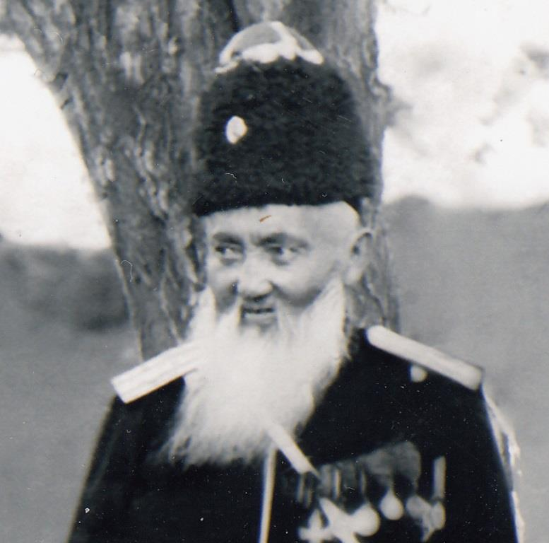

Шабда́н Джанта́ев
Шабда́н Джанта́ев (кирг. Шабдан Жантай уулу;более известен как
Шабда́н-батыр (кирг. Шабдан-баатыр); 29 октября 1839, Сары Багыш,
Чон-Кеминская долина (совр. Кеминский район Киргизии) — 6 апреля
1912, Токмакский уезд, Семиреченская область, Российская империя) —
киргизский государственный и военный деятель, манап.